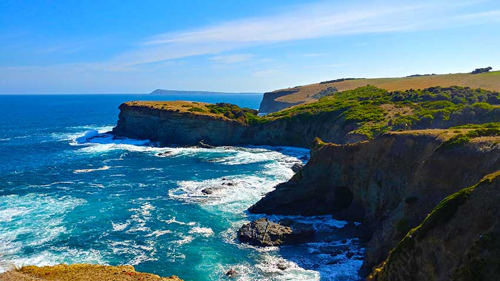

Fellow ramblers - it's hiking time!
Our next hike, planned for Saturday, May 15th, will be to George Bass Coastal Walk.
Details
- Where - Kilcunda General Store & Meikle's Pub
- When - Meet at 9am for immediate start to hike
- What to bring - wear your bestest hiking gear, including sturdy shoes, potential wet weather gear, hat and plenty of sunscreen. Also best to bring food and plenty of water.
If you need a lift, we're more than happy to carpool. If there are more than 4 of us, we may need to organise a convoy.
About George Bass Coastal Walk
The popular George Bass Coastal Walk is a cliff-top trail that stretches from the outskirts of San Remo at Punchbowl Road, to the Bass Highway in Kilcunda.
The walk is around seven kilometres long and takes an average of two hours to walk one way, four hours in total.
The walk offers spectacular views of the coastline and follows the route of the explorer George Bass' epic voyage of discovery along the southern edge of the Anderson Peninsula, over 200 years ago.
Weather wise, expect a cloudy day with sunny breaks, max temps of 15 degrees and some moderate winds. But what do I know? I'm not a meteorologist...
Our last hike...
Last month, we trekked and scrambled through the Lerderderg Gorge.
It was a beautiful trek by a slow moving river, followed by a climb about 400m straight up. We spotted plenty of nice birds, cool mushrooms and a bunch of goats. Fucken goats.
We may have gotten a little lost and didn't realise until we saw a very familiar looking tree. So we didn't end up connecting the two tracks. Instead, we retraced our steps, and slid on our arses down the gorge to get back home.
Overall, it was a good day.

"Yep, that's the same tree as before..."
Have a suggestion?
On the 3rd Saturday of every month, Jocelyn and Daniel will go on a hike. You and any other cool people are welcome to join us.
We aim to start every hike at 9am and finish around lunch time. The 9am start will mean an early morning drive - which helps us not drink so much on the Friday night prior.
If you have suggestions for a walk, please let us know.